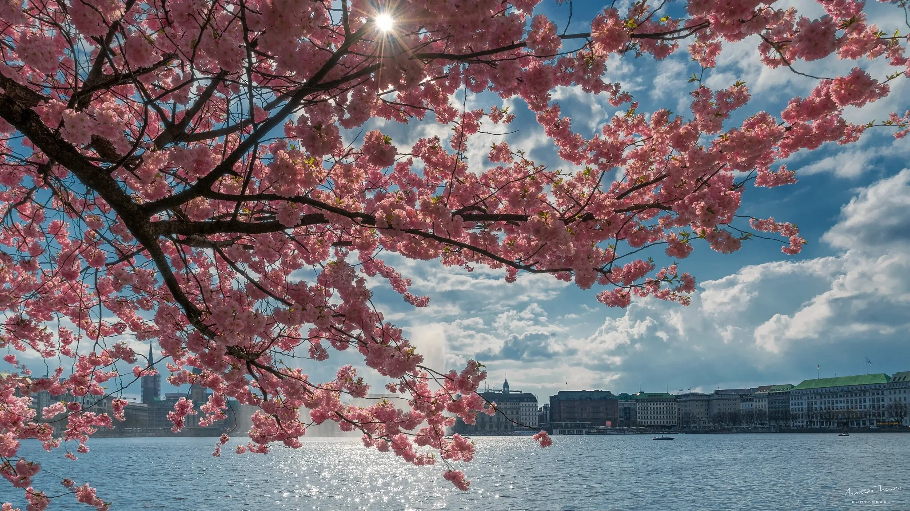
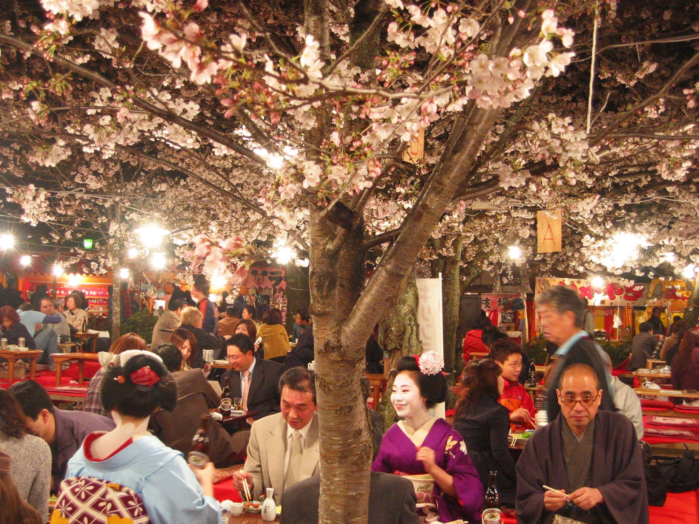

What is Hanami?
Hanami, which literally means "flower viewing," is a centuries-old tradition in Japan that celebrates the arrival of spring and the beauty of nature. During Hanami, people gather under cherry blossom trees (sakura) to enjoy picnics, parties, and traditional Japanese performances.
When is Hanami?
The timing of Hanami varies depending on the location and weather conditions, but it usually takes place in late March to early May. The peak bloom of cherry blossoms lasts for only a few days, so people often plan their Hanami picnics and parties around this short window of time.
How is Hanami celebrated?
During Hanami, people gather in parks and gardens under the cherry blossom trees. They bring food, drinks, and snacks to enjoy with friends and family, and some even dress up in traditional Japanese clothing. There are also traditional Japanese performances such as music, dance, and theater.
Hanami is not only celebrated in Japan but also in other countries around the world with significant Japanese populations. For example, in the United States, the National Cherry Blossom Festival is held in Washington D.C. every year to commemorate the gift of cherry blossom trees from Japan to the United States in 1912.
Conclusion
Hanami is a beautiful and joyful celebration of spring and nature in Japan. If you ever have the chance to experience it, don't miss it!